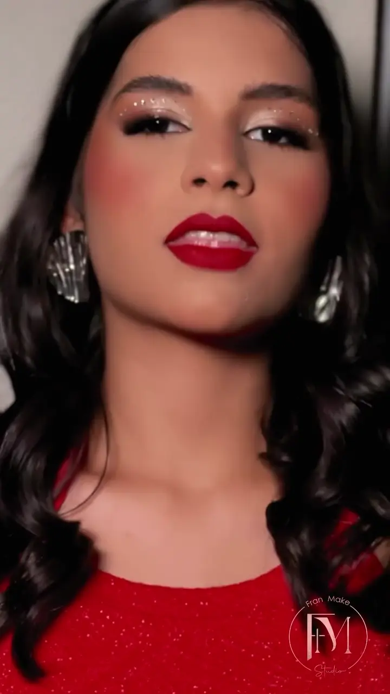
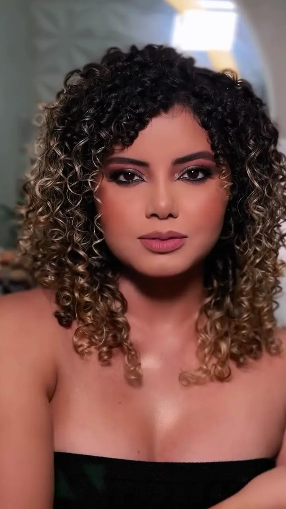
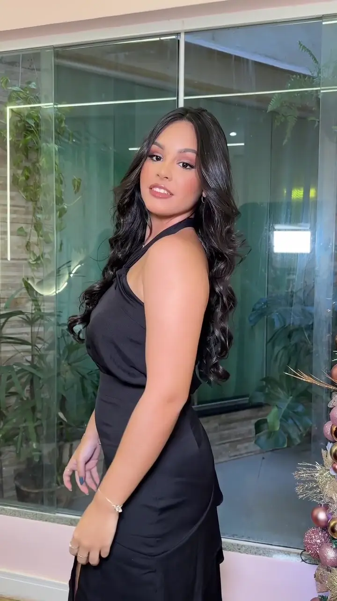

Entenda a experiência, experimente os recursos e prepare alterações com segurança. Este guia é um arquivo separado do site apresentado às clientes.
HTML + CSS + JavaScriptSem frameworkMobile e desktop
01 / EXPERIÊNCIA
Como cada recurso funciona
01
Abertura por scroll
Ao rolar, “CONHEÇA” e “FRAN MAKE STUDIO” dão lugar à Franciana. Um contorno de luz acompanha a silhueta do retrato. Voltar a rolagem reverte a transição.
A navegação aparece ao completar a intro. Você pode rolar diretamente para o conteúdo, sem um tempo de espera obrigatório.
02
Rolagem e títulos
Lenis suaviza a rolagem do mouse. GSAP e ScrollTrigger revelam os títulos palavra por palavra, com SplitType. No celular, o toque continua usando a rolagem nativa.
Sem inclinação, skew ou negrito simulado. A preferência do sistema por menos movimento tem prioridade.
03
Portfólios
Arraste com o mouse, deslize no celular ou use as setas. O movimento automático pausa durante a interação. Use dois cliques ou dois toques em uma foto para ampliar e pressione Escape para fechar.
As setas do teclado funcionam com foco na galeria. O botão Pausar mantém o autoplay desligado até você escolher Retomar.
04
Noivas e detalhes
As noivas têm um destaque editorial próprio. A seção de olhos apresenta a especialidade de Franciana. As imagens desses dois destaques têm parallax suave e inclinação discreta no mouse.
O efeito 3D é aplicado à imagem. A tipografia fica reta. Touch e telas menores não recebem tilt.
EXPERIMENTE
Uma produção. Três perspectivas.
No site, a rolagem controla essa sequência. Aqui, use o controle para compreender a transição.
Fotos 1, 6 e 7 recebidas, classificadas como formanda por confirmação do proprietário. É uma sequência do mesmo look, não um antes e depois.
02 / DIREÇÃO VISUAL
Firme, reta e com personalidade
Branco quente#FFF9F6
Rosa suave#F3E3E3
Rosé#975266
Texto principal#59343E
DM SANS • PESO 700
FRAN MAKE STUDIO
Manrope 500 nos textos importantes. Peso 400 nas descrições secundárias, 600 na navegação e nos botões. Os títulos usam 600 ou 700.
Os quatro pesos são carregados da família. A demonstração não altera o site. A escrita da logo foi preservada como parte da marca.
Onde alterar cores e fontes?
Edite as variáveis no início de style.css: --ink, --paper, --muted e --rose. A variável --serif mantém um nome herdado, mas hoje aponta para DM Sans, que é uma fonte sem serifa.
Ao trocar a família ou os pesos, atualize também o link do Google Fonts no cabeçalho dos dois arquivos HTML. Evite reduzir o contraste de textos e botões.
03 / ACERVO
Imagens identificadas e capas corretas
Transparência verdadeira
logo-transparente.png e franciana.png têm canal alpha com pixels transparentes. O site usa suas versões WebP, também transparentes. Os originais recebidos foram preservados.
Os recortes foram produzidos com edição assistida por IA. Confira principalmente os fios de cabelo e as bordas da marca no tamanho final. Não substitua esses arquivos pelo JPG antigo com xadrez.

Transformação
videoprincipal.mp4
Capa: poster-transformacao.webp

Make e cachos
cacheada.mp4
Capa: poster-cacheada.webp

Formanda
video_formanda.mp4
Capa: poster-formanda.webp
Como adicionar uma foto ao portfólio?
Salve a foto autorizada em images/, com um nome claro e sem espaços.
Crie uma versão WebP para carregar rápido, mantendo o original para ampliação.
No HTML, copie um button.portfolio-card dentro de #gallery-makes ou #gallery-noivas.
Atualize data-img, src, texto da legenda, alt e aria-label. Confirme a ocasião com a cliente.
Repita a alteração no arquivo de compatibilidade index - Copia.html. Teste em tela pequena.
<button class="portfolio-card" type="button"
data-img="images/nova-foto.png"
aria-label="Ampliar Make social, olhar suave">
<img src="images/nova-foto.webp"
alt="Make social com esfumado suave"
width="900" height="1100" loading="lazy" draggable="false">
<span class="photo-caption">Make social, olhar suave</span>
</button>
Como trocar vídeos e suas capas?
No elemento video, atualize poster. Dentro dele, altere o src do elemento source. A capa deve ser um quadro real do próprio vídeo. Preserve controls, playsinline e preload="none".
Não há reprodução automática com som. Ao iniciar um vídeo, os outros pausam. O vídeo também pausa quando sai da área visível.
04 / CONFIGURAÇÃO
Ajuste e exporte
Preencha os campos para gerar um novo config.js. A prévia abaixo é local: nada é publicado e o site não é alterado automaticamente.
Localização confirmada pelo link enviado
O marcador do Fran Make Studio usa latitude -2.5197988 e longitude -44.2177339, extraídas dos campos do estabelecimento no link enviado. Não foram usadas as coordenadas do centro da câmera do mapa.
Conteúdo, ordem das seções, fotos, preços e links.
style.css
Paleta, tipografia, proporções, textura e breakpoints.
config.js
Contatos, mapa, imagem e intensidade dos efeitos.
motion.js
Lenis, SplitType, GSAP, parallax, sequência e tilt.
script.js
Contorno de luz, carrosséis, menu, ampliação e vídeos.
images/ + vendor/
Fotos, capas e vídeos.
Exemplo: quero trocar o preço da make social
Abra index.html, localize a seção id="servicos" e o cartão “Make Social”. Altere o valor e revise a descrição. Faça a mesma alteração em index - Copia.html. O guia não inventa novos preços: R$ 120, R$ 220 e “Sob consulta” vieram do projeto original.
Exemplo: quero deixar o site mais discreto
No configurador, desmarque Parallax e Efeito 3D, mantenha o máximo de inclinação em 3 graus e reduza a velocidade automática para 12 px/s. Baixe o arquivo e substitua o config.js na pasta do site.
Para menos movimento por preferência pessoal, também é possível ativar “reduzir movimento” no sistema. O site respeita essa opção automaticamente.
Como abrir localmente e publicar?
Use um servidor HTTP local. Com Python instalado, abra um terminal nesta pasta e execute python -m http.server 8000. Acesse http://localhost:8000 e, para este guia, http://localhost:8000/guia.html.
Envie os arquivos da pasta completa à hospedagem estática já utilizada. index.html é a entrada principal. Não envie o backup nem a pasta de trabalho. Publicar o guia é opcional: ele não contém senhas, mas descreve a manutenção.
As bibliotecas CDN e as fontes precisam de conexão; os controles básicos permanecem disponíveis se elas não carregarem.
Quais bibliotecas foram integradas?
Next.js Flare, da VGPU, refeito em WebGL para o contorno de luz do retrato.
SplitType 0.3.4, via Unpkg, para dividir os títulos em palavras.
Vanilla-Tilt 1.8.1, via cdnjs, para inclinação leve das imagens de destaque.
O ciclo da aplicação e o Lenis usam o ticker do GSAP. Não ative autoRaf no Lenis sem revisar essa integração. Carrosséis e diálogos são excluídos da suavização para manter seus controles nativos.
06 / AJUDA
Encontre uma resposta
A foto voltou a mostrar xadrez. O que aconteceu?
Confira portraitImage no config.js. Use images/franciana.webp ou images/franciana.png. O arquivo franciana.jpg é o original antigo, com o xadrez incorporado.
Por que as animações não aparecem?
Verifique a preferência de redução de movimento do sistema, as opções em config.js, a conexão com Unpkg/cdnjs e o console do navegador. A página permanece legível se uma biblioteca falhar. Teste por HTTP, não por file://.
O portfólio parou de andar sozinho?
Isso é esperado ao arrastar, passar o mouse, focar com teclado ou pressionar Pausar. Retire o mouse da galeria e aguarde o tempo configurado, ou pressione Retomar. A preferência por menos movimento desativa o autoplay.
Posso colocar a mesma cliente em uma sequência?
Sim, depois de confirmar que as fotos são da mesma produção e que há autorização de uso. No HTML, atualize os três elementos data-look-frame da seção formandas. A sequência atual tem três etapas; alterar a quantidade exige ajustar também os passos em motion.js.
As letras estão diferentes em outro aparelho?
DM Sans e Manrope vêm do Google Fonts. Sem acesso à fonte, o navegador usa Arial. A aparência pode variar um pouco, mas continua reta e legível. O site desativa a síntese artificial de peso e estilo.
O mapa não aparece depois de preencher?
Latitude e longitude devem ser números decimais válidos, com ponto no arquivo JS. Ou use o endereço completo do src de um iframe de incorporação do Google Maps. Um link curto é aceito somente no campo mapsUrl.
Nenhuma resposta encontrada. Tente outra palavra.
CONFIGURAÇÃO E SEGURANÇA
Editável e protegido
No desktop, o vídeo avança e retorna com a rolagem. No celular, ele reproduz sem som e em loop; se o navegador bloquear a reprodução automática, use Reproduzir vídeo. A página rola naturalmente, sem prender a tela. A navbar aparece ao completar a intro. A cópia franciana-scroll.mp4 foi preparada a partir do original francianavideo.mp4, sem áudio e com quadros de referência frequentes. O original foi preservado. Para trocar o vídeo, use os campos acima e mantenha os arquivos na pasta images.
A luz do contorno passeia em volta do retrato, ou segue o mouse, enquanto a Hero está visível, e para fora dela. Com redução de movimento ela fica parada.
O arquivo vercel.json contém cabeçalhos de segurança editáveis. SEGURANCA.md explica cada um, como permitir novos domínios e como verificar as mudanças. O guia gera arquivos para download e não oferece gravação pública no servidor. Nunca coloque senhas em config.js.
Referências de direção visual: React Bits, 21st.dev, shadcn/ui e Get Design. A implementação permanece HTML, CSS e JavaScript, com composição própria.
07 / PRÓXIMOS PASSOS
Pronto para a próxima etapa
Esta lista fica salva apenas neste navegador. Marcar uma etapa não publica nem altera o site.